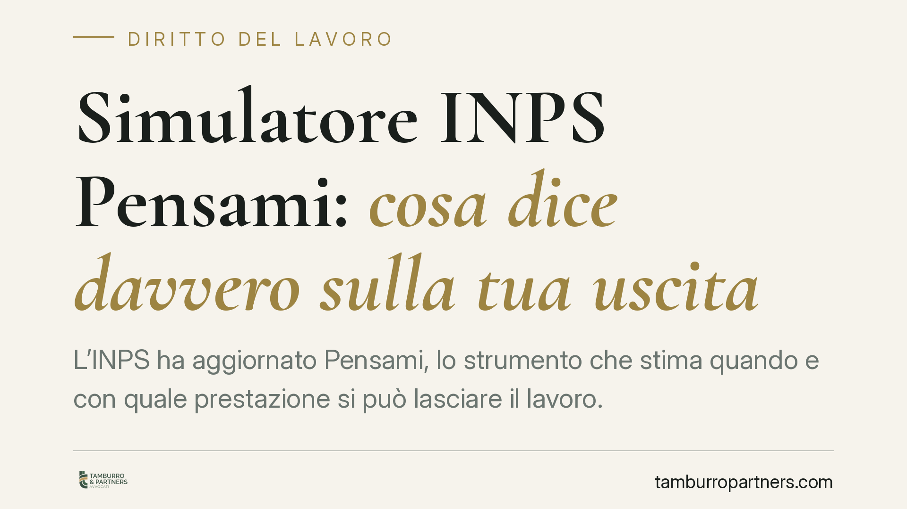

Simulatore INPS Pensami: cosa dice davvero sulla tua uscita
L'INPS ha aggiornato Pensami, lo strumento che stima quando e con quale prestazione si può lasciare il lavoro. È un simulatore orientativo, non una certificazione: utile per pianificare, rischioso se se ne fa una base per decisioni definitive. Vediamo cosa restituisce, cosa non garantisce e quali cautele valgono per chi lavora e per chi organizza il personale.

Il contesto
Secondo quanto comunicato dall'INPS, il simulatore Pensami è stato aggiornato per tenere conto delle regole di accesso alla pensione attualmente in vigore. Lo strumento consente di stimare, sulla base dei dati inseriti dall'utente, le possibili vie di uscita e l'età teorica di pensionamento.
*Nota: gli estremi del messaggio INPS che ha annunciato l'aggiornamento vanno verificati sui canali ufficiali dell'Istituto prima di ogni utilizzo. Diffidare di date e numeri riportati da fonti secondarie.*
Inquadramento normativo
L'età pensionabile non è un dato fisso. Il perno resta l'art. 24 del D.L. 201/2011, convertito con modificazioni dalla L. 214/2011 (la cosiddetta riforma Fornero), che ha legato i requisiti anagrafici e contributivi all'incremento della speranza di vita rilevato dall'ISTAT.
A questo impianto si sovrappongono le misure temporanee introdotte anno per anno dalle leggi di bilancio (anticipi, finestre, requisiti derogatori). È questo continuo assestamento che rende necessari strumenti come Pensami: non perché la norma cambi ogni giorno, ma perché il quadro complessivo è stratificato e poco leggibile senza un calcolo.
Due strumenti, due domande diverse
Va tenuta ferma la distinzione tra i due servizi INPS, perché rispondono a domande diverse.
Pensami risponde alla domanda: *"quali strade ho, in astratto?"*. Elabora scenari sulla base dei dati che l'utente digita e non attinge alla posizione contributiva reale. È uno strumento di orientamento generale.
"La mia pensione futura" risponde invece alla domanda: *"a che punto sono io, in concreto?"*. Attinge all'estratto contributivo individuale e richiede accesso autenticato all'area riservata (SPID, CIE o CNS). Restituisce una stima calibrata sulla storia contributiva effettiva.
In sintesi: Pensami per capire le possibilità, "La mia pensione futura" per stimare la propria posizione.
Il punto critico: stima non è diritto
L'errore più frequente è leggere la data restituita dal simulatore come una scadenza certa. Non lo è.
La data di uscita indicata da uno strumento di stima non equivale al diritto acquisito alla prestazione. Il diritto matura solo quando l'INPS verifica in via ufficiale i requisiti sulla posizione reale, e può variare per contribuzione non ancora registrata, periodi da riscattare o ricongiungere, futuri adeguamenti alla speranza di vita e modifiche normative.
La stima è una fotografia orientativa scattata con le regole di oggi. Serve a pianificare, non a contare i giorni.
Implicazioni per il datore di lavoro
Qui si colloca l'unico ma rilevante aggancio giuslavoristico. Le stime previdenziali entrano spesso nelle valutazioni aziendali sugli organici: chi è "vicino alla pensione", chi potrebbe uscire, come programmare i turnover.
Il profilo di rischio è concreto. Fondare su una stima non certificata decisioni che incidono sul rapporto di lavoro — un licenziamento, un mancato rinnovo, un accordo di uscita — espone a contestazioni. Se la data presunta si rivela errata e la decisione è già stata assunta, il datore di lavoro può trovarsi privo di una base solida a giustificazione della scelta, con i relativi profili di illegittimità.
La stima di un simulatore non è un documento previdenziale opponibile. Non lo è verso il lavoratore, non lo è in un eventuale contenzioso.
Cosa fare in concreto
- Verifica prima l'estratto contributivo. Usa "La mia pensione futura" con accesso autenticato: partire da Pensami va bene per orientarsi, non per decidere.
- Controlla eventuali buchi contributivi. Periodi mancanti, da riscattare o da ricongiungere possono spostare la data reale: segnalali all'INPS o a un professionista prima di ogni pianificazione.
- Non trattare la data stimata come definitiva. Aggiorna la simulazione dopo ogni legge di bilancio e dopo gli adeguamenti ISTAT alla speranza di vita.
- Datori di lavoro: non fondate decisioni sul rapporto su stime non certificate. Prima di qualsiasi scelta legata all'uscita di un dipendente, acquisite un riscontro previdenziale ufficiale.
- In caso di dubbio richiedete una verifica formale. Per posizioni complesse, la certificazione INPS dei requisiti resta l'unico riferimento affidabile.
---
Contributo informativo a cura di Tamburro & Partners Avvocati. Non costituisce parere legale.
Ogni storia di lavoro ha i suoi tempi.
Se gestisci HR e vuoi un confronto su contenzioso, ispezioni o licenziamenti, scrivi allo studio. Ti rispondiamo entro un giorno lavorativo.